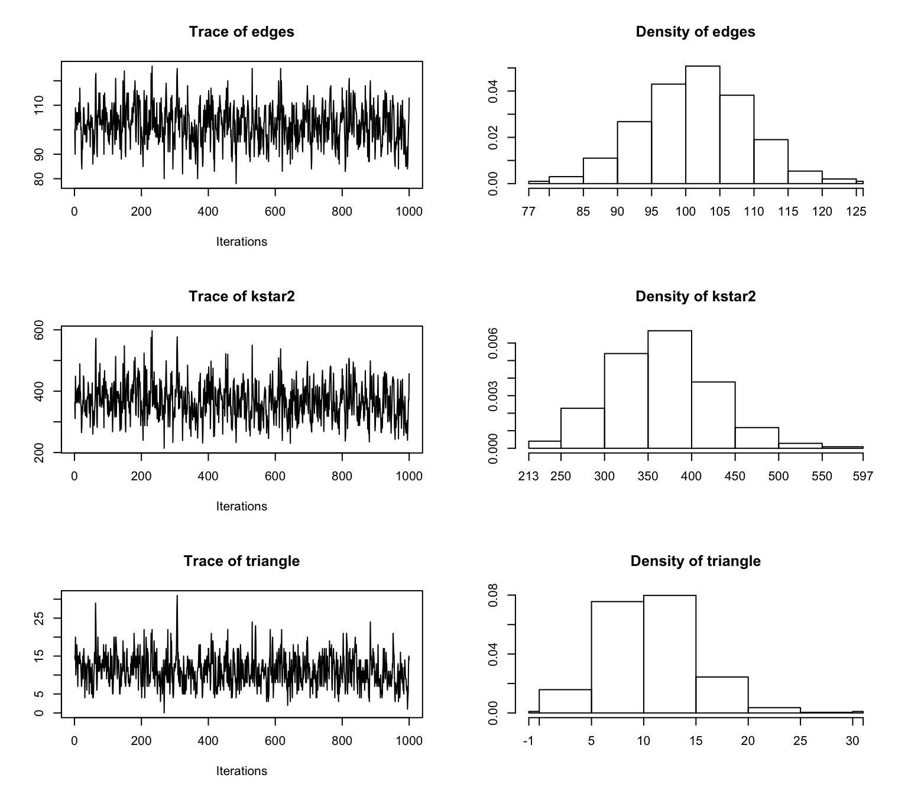

Chapter 4 Exponential random graph models (ERGMs)
4.1 Introduction
The basci assumption behind exponential random graph models (ERGMs) is that the observed network is generated by a stochastic process in which relational edges come into being in ways that may be shaped by the presence or absence of other edges (and possibly node-level attributes).
In other words, the network is conceptualized as a self-organizing system of relational edges. Substantively, the claim is that there are local processes that generate dyadic relations, and that these processes may depend on the surrounding social environment (i.e. on existing relations).
For example, we can assume that actors with similar attributes are more likely to form friendship edges (homophily), or that if two unconnected actors were connected to a third actor, at some point they are likely to form a friendship tie between them (transitivity). Note that in addition to the assumption of stochasticity, this description is also implicitly temporal and dynamic.
Definition - The likelihood of an ERGM belongs to the exponential family of distributions and represents the probability distribution of a network graph \(y\) given a vector of parameters \(\theta\): \[ f(y\ |\ \theta) = \frac{\exp\{\theta^T s(y)\}}{c(\theta)}. \]
This equation states that the probability of observing a given network graph \(y\) is equal to the exponent of the observed graph statistics \(s(y)\) which is a function of the network data \(y\) and covariate information \(x\) multiplied by parameter vector \(\theta\) divided by a normalising constant term \(c(\theta)\).
require('statnet')4.2 Dependence assumptions
Network statistics \(s(y)\) imply different assumptions regarding the network dyadic dependence structure.
4.2.1 Dyadic independence
Dyad independent network statistics imply independence between dyads: the presence or absence of a edge does not depend the connectivity structure of the overall network. The random graph model is a dyadic independence model as all possible distinct edges in the network are independent of one another: \[ Y_{ij}\ |\ \eta \sim Bernoulli(\eta),\; \forall i \ne j. \]
4.2.2 Dyadic dependence
Dyadic dependence is an unrealistic assumption in many circumstances.
Dyad dependent network statistics imply dependence between dyads: an edge between \(i\) and \(j\) is assumed to be dependent on other edges.
For example:
- stars statistics assume that an edge between \(i\) and \(j\) is contingent on any possible edge involving node \(i\) and \(j\).
- triadic statistics assume that an edge between \(i\) and \(j\) is contingent on any possible edge involving any node of the network connected to both \(i\) and \(j\).
4.3 Network statistics
Common network statistics (undirected networks):
edge statistic: the number of edges in the network. This statistic is commonly density effect
\(k\)-star statistics: the number of \(k\)-star structures (where generally \(k = 2\) or \(k = 3\))
cyclic statistics: the number of connected \(k\)-cycles (where generally \(k = 3 \rightarrow\) triangles)

To get a list of network statistics implemented in the ergm package:
help('ergm-terms', 'ergm')Let’s consider a random 53-node undirected network:
set.seed(17)
N <- 53
y <- network(N, directed = FALSE)
plot(y, vertex.cex = 2, vertex.col = "skyblue")
Let’s consider an ERGM with the following network statistics:
- edges: \(s_1(y) = \sum_{i < j} y_{ij}\);
- 2-stars: \(s_2(y) = \sum_{i < j < k} y_{ij}y_{ik}\);
- triangles: \(s_3(y) = \sum_{i < j < k} y_{ij}y_{ik}y_{jk}\).
The vector of observed network statistics \(s(y)\) can be calculated using the summary function:
model.1 <- y ~ edges + kstar(2) + triangle
summary(model.1)## edges kstar2 triangle
## 64 157 44.3.1 Higher-order network statistics
Simulation-based inferential procedures have brought to light model degeneracy problems related to ERGMs defined by traditional specification (Schweinberger 2011). In order to overcome these issues, a new specification of network statistics based on geometrically weighted functions of extra-triadic network statistics distributions such as degree distributions have been proposed by Snijders et al. (2006).
Some of the geometrically weighted undirected network statistics that are common in empirical research are:
- Geometrically weighted degree statistic (
gwdegree) is a function of the degree counts \(D_d (y)\) defined as the number of nodes in \(y\) with degree \(d\): \[\begin{equation*} gwdegree(y, \alpha) = \sum_d g_d (\alpha) D_d (y), \end{equation*}\] where \(g_d (y)\) is an exponential weight function defined as: \[\begin{equation*} g_d (\alpha) = e^{\alpha} \left\{ 1 - \left( 1 - e ^{-\alpha} \right)^{d} \right\}. \end{equation*}\]
This statistic expresses a version of preferential attachment (Albert and Barabási 2002) with edges from low degree to high degree nodes being more probable than edges among low degree nodes.
- Geometrically weighted edgewise shared partner statistic (
gwesp) is a function of the edgewise shared partner statistics \(EP_d (y)\) defined as the number of unordered connected pairs \((i, j)\) (partners) that are both connected to exactly \(d\) other nodes: \[\begin{equation*} gwesp(y, \alpha) = \sum_d g_d (\alpha) \; EP_d (y) = \sum_d g_d (\alpha) \sum_{i < j} y_{ij} \mathbb{I}_{ \left\{ \sum_k y_{ik} y_{jk} = d \right\} }, \end{equation*}\] where \(\mathbb{I}_{\lbrace \cdot \rbrace}\) is the indicator function. For directed networks the geometric weighting is over homogeneous shared partners only (i.e., only partners on a directed two-path connecting the nodes in the edge and in the same direction).
This statistic provides a suitable representation of transitivity in social networks by taking into account high-order \(k\)-triangles.
For example, let’s consider the following ERGM:
model.2 <- y ~ edges + gwesp(decay = 1, fixed = TRUE)
summary(model.2)## edges gwesp.fixed.1
## 64.00000 11.632124.3.2 Statistics with nodal attributes variables
There are various ways of introducing node-level effects (node attributes) into ERGMs. We assume an vector \(X\) of attribute variables is given.
In social selection models, attributes are assumed to be exogenous predictors of network edges (G. Robins, Elliott, and Pattison 2001): edges tend to develop between actors with certain attribute values. This means that the interest is in the probability of the network graph \(y\) given the observations of attributes \(x\): \(\Pr(Y = y|X = x)\).
4.4 Parameter interpretation
The parameter estimates associated with the network effects expressed by the network statistics provide insights about the contribution of each network statistic to edge formation. ERGMs allow to establish a relationship between a binary outcome variable (presence/absence of an edge between nodes) and a group of predictor variables (network statistics). It models the logit-transformed probability as a linear relationship with the predictor variables.
The conditional log-odds of an edge between \(i\) and \(j\) is: \[ \mathrm{logit} \left( \Pr(Y_{ij} = 1\ |\ Y_{-ij}, \theta ) \right) = \theta^T\ \Delta (s(y))_{ij}, \] where \(\Delta (s(y))_{ij}\) is the change in \(s(y)\) when the value of \(Y_{ij}\) switch value from 0 to 1. So the coefficient \(\theta\) can be interpreted as the log-odds of an individual edge conditional on all others.
4.5 Network simulation
The ERGM normalising constant \(c(\theta)\) is calculated over the sum of all possible graphs on \(N\) nodes and it is therefore extremely difficult to evaluate in presence of extra-dyadic network statistics for all but trivially small graphs.
The simulation of graphs from the parameter values of the model can be generally provided by MCMC algorithms. One of the convenient ways to generate random graphs is by the Metropolis algorithm applied to an initial adjacency matrix \(Y^{(0)}\) whose elements dyads are stochastically updated so that at each iteration \(t\), the procedure implies that \(Y^{(t-1)}\) and \(Y^{(t)}\) differs in only one dyad. This mechanism cycles through the whole matrix so as to produce a distribution \(Y^{(T)}\) tends asymptotically to the desired random graph distribution.
In practice the algorithm compares the probability of a proposed graph \(y'\) to the current one \(y_c\) where \(y'\) is selected at each step by proposing a change in the current state of a single dyad \((i,j)\), i.e. creating a new edge or dropping an old edge and then decides whether or not accept the proposed network with the following acceptance probability: \[\begin{equation*} \alpha =\min \left\lbrace 1,\frac{p(y'\ |\ \theta_0)\ q(y_c \rightarrow y')} {p(y_c\ |\ \theta_0)\ q(y' \rightarrow y_c)} \right\rbrace =\exp \left\lbrace \theta_0^t \left[ s(y') - s(y_c) \right] \right\rbrace \end{equation*}\]where \(q(y_c \rightarrow y')\) and \(q(y' \rightarrow y_c)\) denote the probability of \(y'\) given \(y_c\) and of \(y_c\) given \(y'\) respectively.
The behaviour of MCMC algorithm is dependent on the choice of the proposal density \(q(\cdot)\) and on the network statistics \(s(\cdot)\) although it is proven that in principle the Metropolis yields convergence to the target distribution.
Suppose we want to simulate undirected networks on 53 nodes from the same ERGM defined above with parameter values:
- \(\theta_1 = -1.9\), parameter related to the edge statistic \(s_1(y)\);
- \(\theta_2 = -0.1\), parameter related to the 2-star statistic \(s_2(y)\);
- \(\theta_3 = 0.4\), parameter related to the triangle statistics \(s_3(y)\).
We can use the simulate function to do that:
set.seed(11)
y.sim <- simulate(network(N, directed = FALSE) ~ edges + kstar(2) + triangle,
coef = c(-1.9, -0.1, 0.4),
statsonly = TRUE,
nsim = 1000,
control = control.simulate.formula(MCMC.burnin = 1000, # burnin
MCMC.interval = 100)) # mcmc thinning interval
summary(y.sim)## edges kstar2 triangle
## Min. : 78 Min. :214.0 Min. : 0.00
## 1st Qu.: 97 1st Qu.:326.8 1st Qu.: 8.00
## Median :102 Median :365.0 Median :11.00
## Mean :102 Mean :367.1 Mean :11.18
## 3rd Qu.:107 3rd Qu.:405.0 3rd Qu.:14.00
## Max. :126 Max. :597.0 Max. :31.00We can analyse the MCMC output diagnostics using the coda package:
require(coda)4.5.1 Trace and density plots
plot(mcmc(y.sim))
4.5.2 Auto-correlation plots
acfplot(mcmc(y.sim))
References
Schweinberger, Michael. 2011. “Instability, Sensitivity, and Degeneracy of Discrete Exponential Families.” Journal of the American Statistical Association 106 (496). Taylor & Francis: 1361–70.
Snijders, T. A. B., P. E. Pattison, G. L. Robins, and Handcock M. S. 2006. “New Specifications for Exponential Random Graph Models.” Sociological Methodology 36: 99–153.
Albert, Réka, and Albert László Barabási. 2002. “Statistical Mechanics of Complex Networks.” Reviews of Modern Physics 74 (1). APS: 47.
Robins, Garry, Peter Elliott, and Philippa Pattison. 2001. “Network Models for Social Selection Processes.” Social Networks 23 (1). Elsevier: 1–30.